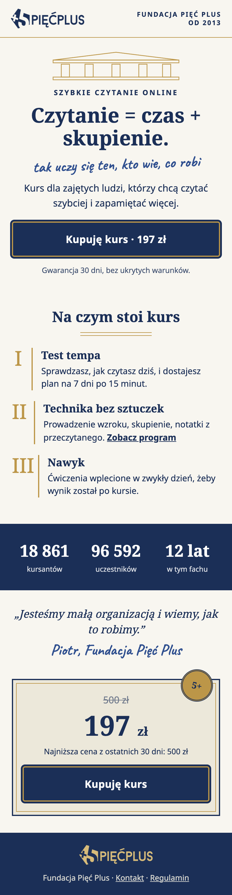
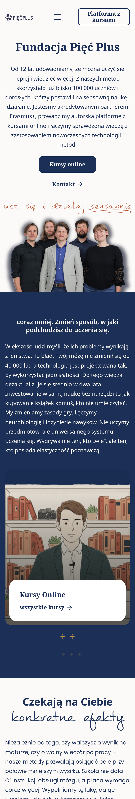

Stara dobra szkoła: 2 zielone, 2 granatowe
Landing ma nowy styl: kolumny, odręczne notki, numeracja rzymska, dyplom z pieczęcią. Strona główna to żywe 5plus.edu.pl w tych kolorach (ilustracje z czerwonymi książkami to obrazki, nie zmieniają się).
Zieleń 1 · Ciężka (ciemna zieleń, pergamin, mosiądz)
Duże ciemne pasy, mosiądz jak okucia biblioteki. Najbardziej „dostojny gabinet”.papier #F3EDDC · główny #0E3B2C · złoto na ciemnym #D6B35F · złoto #D6B35F · pióro #1F5A44
kontrast: główny na papierze 10.7:1 · złoto na ciemnym 6.2:1 · biały na przycisku 12.5:1 · pióro 6.9:1
Zieleń 2 · Jasna (kość słoniowa, zieleń szałwiowa, miedź)
Dużo jasnego papieru, zieleń tylko w nagłówkach, przyciskach i stopce. Spokojna, czytelna, „stary college w słońcu”.papier #FAF7EF · główny #1E4D3B · złoto na ciemnym #E0BF7A · złoto #C79A3D · pióro #2C6B52
kontrast: główny na papierze 9.0:1 · złoto na ciemnym 5.5:1 · biały na przycisku 9.6:1 · pióro 5.9:1
Granat 1 · Ciężki (atrament, pergamin, złoto)
Głęboki granat uczelni brytyjskich i Princeton, złoto jak tłoczenie na dyplomie.papier #F2ECDD · główny #12203F · złoto na ciemnym #CBA85A · złoto #CBA85A · pióro #23407A
kontrast: główny na papierze 13.7:1 · złoto na ciemnym 7.1:1 · biały na przycisku 16.1:1 · pióro 8.5:1
Granat 2 · Jasny (kamień, biel, stare złoto)
Biała biblioteka i kamienne kolumny, granat spokojniejszy i jaśniejszy niż dziś.papier #F8F6F0 · główny #1B2F57 · złoto na ciemnym #D8BC7A · złoto #BC9648 · pióro #2F4F8F
kontrast: główny na papierze 12.2:1 · złoto na ciemnym 7.2:1 · biały na przycisku 13.2:1 · pióro 7.4:1

